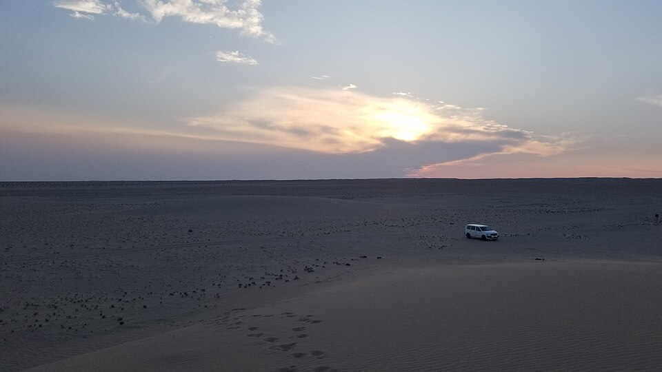

報道・証言のみ 別班（自衛隊の非公然組織）
作中では乃木らが所属する。現実の存在は政府が否定し、公的証拠は未確認。[6]
『VIVANT』は、実在性が論争になる組織と海外の諜報活動を、企業送金事件の物語に接続した作品である。作中の設定と、現実に確認できる記録を分けて読む必要がある。
ネタバレあり
1億ドルの誤送金を起点に乃木が逃走へ巻き込まれる。
丸菱商事からGFL社へ1億ドルが誤送金され、乃木は回収のためバルカへ派遣される。GFL社の背後にテロ組織の影が見える。爆破と襲撃を受けた乃木は野崎、薫、ドラムと逃走する。現実の事件との対応として、誤送金にはバングラデシュ中央銀行不正送金事件などがあるが、作中の出来事自体は創作である。[11]
企業送金の異常を海外の安全保障問題へ接続する導入であり、丸菱商事の1億ドル誤送金と砂漠の逃走と日本大使館に対応する。
逃走中の乃木たちが爆破テロの被害者を治療する。
バルカ警察とテロ組織の追跡が続き、乃木たちは砂漠へ逃れる。爆破テロの被害者ジャミーンを薫が治療し、乃木は野崎らと日本へ戻る。野崎は乃木を単なる商社員ではないと疑い、誤送金の背後を調べ始める。[12]
海外での邦人と現地協力者の移動や救出、拘束の危険を組み合わせた回であり、砂漠の逃走と日本大使館と海外での邦人拘束・人質に対応する。
送金経路を追う乃木が、社内の協力者とハッカーに近づく。
乃木は丸菱商事内部の関係者と、天才ハッカーのブルーウォーカーに近づく。誤送金は単純な入力ミスではなく、テントの資金工作と関係する可能性を示す。企業の送金とサイバー活動を結び付ける筋立ては、実在の不正送金事件やサイバー窃取を参照した創作である。[13]
企業内の不正とサイバー工作を一つの資金経路に配置し、丸菱商事の1億ドル誤送金とハッカー「ブルーウォーカー」を示す。
乃木が別班員であり対テロ作戦に参加していたと判明する。
乃木が自衛隊の非公然組織・別班の工作員であることが明らかになる。乃木はアリを尋問し、テントと自分の父親のつながりを検索する。現実には2013年の共同通信報道と政府否定が併存するが、作中の指揮系統や工作活動は創作として描かれている。[6]
商社員の身分と情報活動を重ねる演出であり、別班（自衛隊の非公然組織）と商社員という偽装身分に対応する。
テントの協力者が公安内部にもいる疑いが浮上する。
乃木は写真から丸菱商事の山本がテントの協力者である可能性を検出する。公安内部にもテントのモニターがいる疑いが浮上し、内通者が日本の中枢にいることが示される。実在の諜報史にはキム・フィルビー、エイムズ、ハンセンなどの内通者がいる。作中人物の関係は創作である。[14]
公安組織の内部に協力者を置く演出であり、モニター（公安内部の内通者）に対応する。
乃木はテントの指導者ベキが実父である可能性を確信する。
乃木の幼少期とFが生じた経緯が描かれ、乃木はテントの指導者ベキが実父である可能性を確信する。ジャミーンの手術、太田による暗号解析、テント拠点の特定が同時に進む。父子関係と別班潜入の組合せは、現実の組織記録では確認されない。[15]
身分の秘匿と家族関係を潜入の動機にする回であり、別班（自衛隊の非公然組織）とテント：テロと孤児救済の二つの顔に対応する。
乃木は別班員を撃ったように見せ、テントへ入る。
乃木は別班員たちを撃ち、黒須を拘束してテント側へ寝返ったように見せる。実際にはベキに接触するための潜入作戦で、別班員4人が撃たれたように描かれる。別班員の殺害と暗殺計画に近い現実の事例はあるが、作中の作戦は創作である。[16]
仲間の殺害を偽装して敵組織へ入る演出であり、別班員の殺害・ベキの暗殺計画に対応する。
DNA鑑定で親子関係が示され、テントの資金経路が明らかになる。
DNA鑑定で乃木とベキの親子関係が確認される。乃木はテントの会計と資金洗浄を調べ、巨額の土地購入を突き止める。DNA採取を情報活動に利用した実在例として、ビンラディン作戦での偽ワクチンによるDNA採取がある。[17]
家族関係の確認に鑑定を使い、資金経路を追う演出であり、テントの資金源とフローライトとDNA鑑定で親子を確かめるに対応する。
テントの救済活動と資金源が明らかになる。
乃木卓がバルカで家族を失い、孤児や難民を救うためテントを作った過去が描かれる。テントが購入した土地の地下にフローライトが存在し、犯罪以外の合法的収入を得る可能性が示される。テロ組織が福祉網を持つ現実の事例はあるが、テントは創作上の組織である。[8]
テロと救済という二つの顔を一つの組織に置き、テント：テロと孤児救済の二つの顔とテントの資金源とフローライトに対応する。
ベキらが公安へ引き渡され、テント解体と生存偽装が描かれる。
乃木は別班として潜入していたことをベキに告げる。ベキは乃木の意図を理解し、テントの資金とフローライト計画を託す。ベキらは公安へ引き渡され、乃木はベキを撃ったように見せかけて生存させたと解釈される。ラストでは赤い饅頭が置かれ、続編への伏線が示される。[18]
身柄の処理や父子関係、次の作戦を残す終結であり、別班（自衛隊の非公然組織）と海外での邦人拘束・人質に対応する。
公安監修は元警視庁公安部外事課の勝丸円覚である。勝丸は、名称を変えた後継組織が存在するとの元関係者の説明を紹介した一方、ドラマのような暗殺活動ではなく人的情報収集が中心だと述べた。政府は別班の存在を公式には否定しており、実在を断定できる公的証拠は未確認である。[21]
福澤克雄は、乃木が別班員だと明かさない構成と、モンゴルと日本を往復する撮影方法を説明している。石井暁の著書は、2013年の共同通信報道を含む別班論争を扱う資料として参照される。[22]
| ID | 作中の演出 | 対応する実在の事例 |
|---|---|---|
| d01 | 別班（自衛隊の非公然組織） | 2013年の共同通信報道「陸幕運用支援・情報部別班」／陸軍中野学校／2013年と2026年の政府否定 |
| d02 | 警視庁公安部外事課の野崎 | ラストボロトフ事件／レフチェンコ事件／ソフトバンク元社員事件／大川原化工機事件 |
| d03 | 丸菱商事の1億ドル誤送金 | バングラデシュ中央銀行不正送金事件／東芝機械ココム違反事件／北朝鮮の暗号資産窃取 |
| d04 | テント：テロと孤児救済の二つの顔 | ヒズボラとハマスの福祉網／ホーリーランド財団事件／LTTE |
| d05 | テントの資金源とフローライト | ハワラとテロ資金／モンゴルの「第三の隣国」政策と鉱物資源 |
| d06 | モニター（公安内部の内通者） | キム・フィルビー／エイムズ／ハンセン／宮永事件／ボガチョンコフ事件 |
| d07 | 商社員という偽装身分 | ゾルゲ事件／イリーガルズ事件／エリ・コーエン／辛光洙事件と背乗り |
| d08 | 別班員の殺害・ベキの暗殺計画 | リトビネンコ／金正男／マブフーフ／スクリパリ／2024年の通信機器爆破 |
| d09 | 砂漠の逃走と日本大使館 | アルゴ作戦／ピムリコ作戦／エンテベ作戦 |
| d10 | ハッカー「ブルーウォーカー」 | スタックスネット／MirrorFace／ラザルス |
| d11 | DNA鑑定で親子を確かめる | ビンラディン作戦での偽ワクチンによるDNA採取 |
| d12 | 海外での邦人拘束・人質 | 在アルジェリア邦人人質事件／ISILによる邦人殺害／アステラス製薬社員拘束／北海道新聞記者拘束 |
| d13 | 第2シリーズ：拉致された別班員の奪還 | 2024年8月の米露などの囚人交換（ロシアのイリーガルを含む） |